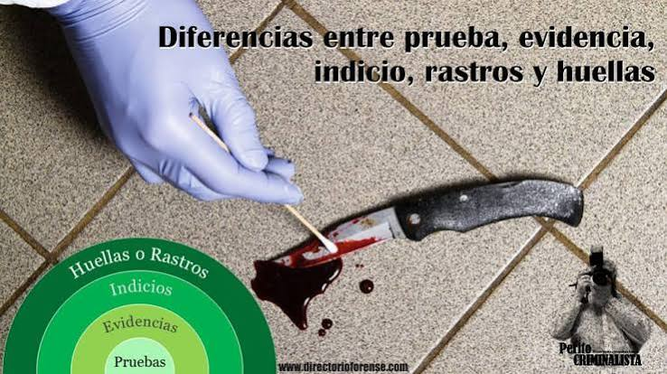
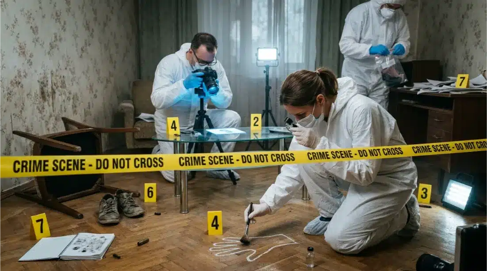
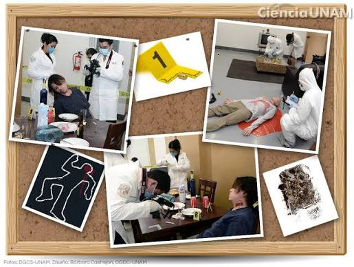

Los indicios
Son objetos o elementos que pueden aportar información importante para una investigación.
La ciencia que ayuda a descubrir la verdad mediante las evidencias.
La Criminalística utiliza métodos científicos para analizar los indicios encontrados en el lugar de los hechos.
En el siguiente video puedes conocer más sobre esta ciencia.
Su objetivo es ayudar a conocer cómo ocurrieron los hechos mediante el estudio de las evidencias.


Son objetos o elementos que pueden aportar información importante para una investigación.
Se estudian para obtener información que ayude a comprender lo ocurrido.

Se examina y documenta para localizar y conservar las evidencias.
La Criminalística permite recopilar y analizar evidencias que pueden ayudar a esclarecer los hechos y apoyar las investigaciones de las autoridades.
Conoce más sobre esta disciplina mediante los siguientes videos.